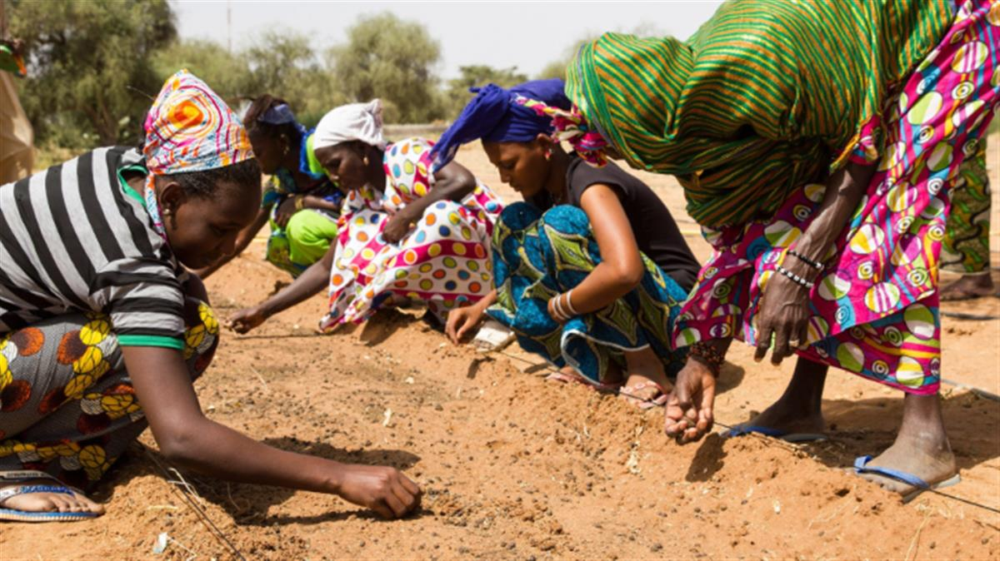
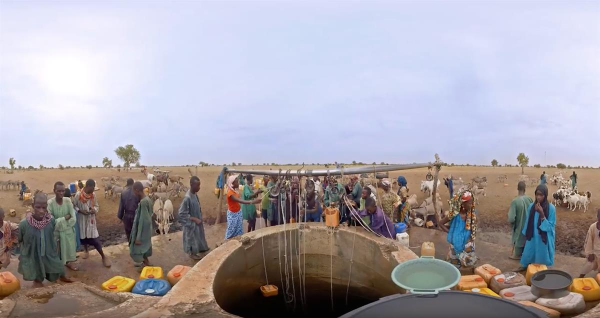
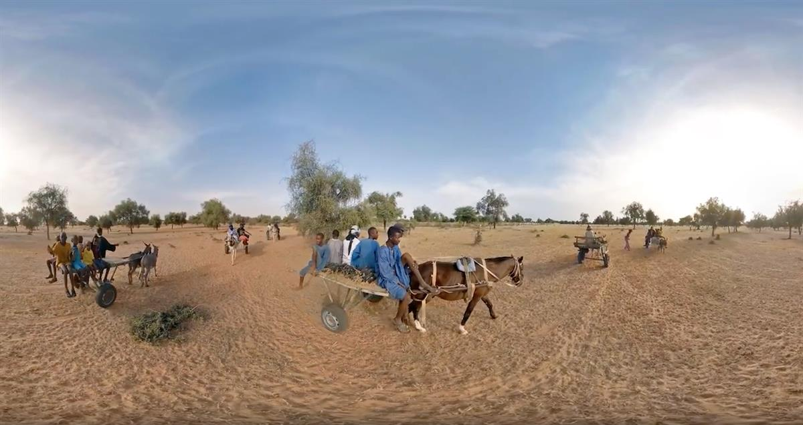
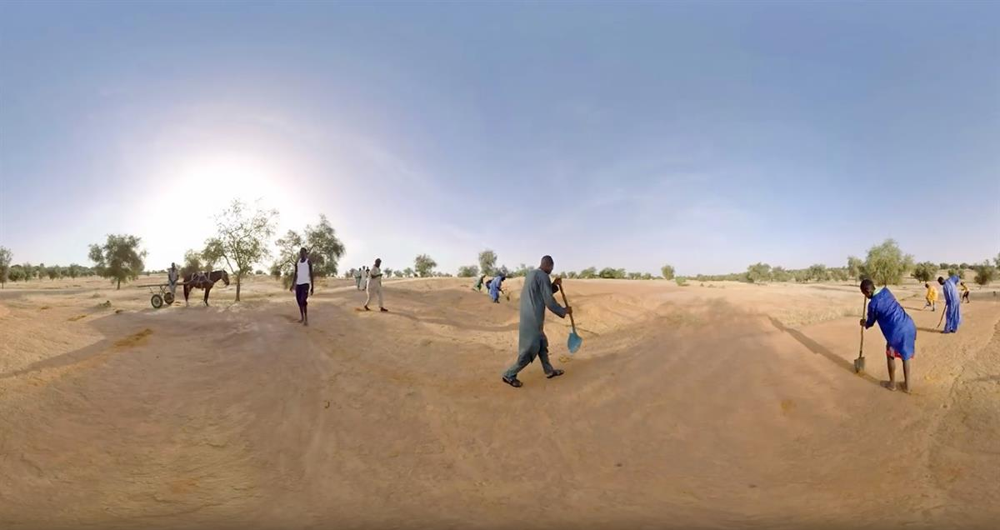
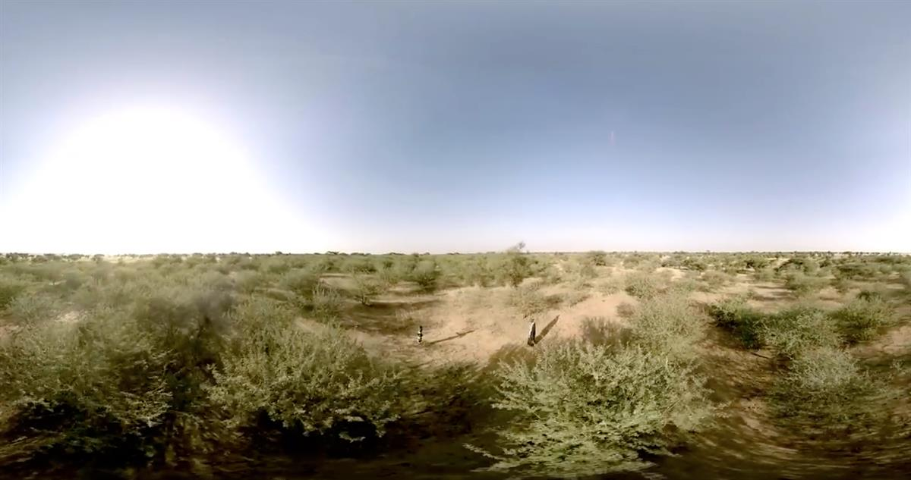

Spanning the entire width of Africa – nearly 8,000km from Dakar to Djibouti – a Great Green Wall is planned to defend land from the winds and sand of the Sahara. The band of trees is designed to halt the advance of the desert and create a panoply of initiatives, providing food, jobs and a future for the millions living on the frontline of climate change. Answering many of today’s most critical issues, it’s a growing response to challenges from food security to migration, international peace and security.
Temperatures in the Sahel and the Sahara regions are rising faster than anywhere else and its populations are some of the poorest in the world. Human pressure on fragile eco-systems, alongside the effects of climate change, has led to poor soil quality, lower crop production and less grazing for livestock. Many people, especially the young, have left to find jobs elsewhere through migration to Europe or South America.
During the COP21 Paris talks in December 2015, world leaders and heads of international agencies pledged US$4 billion over five years to step up the initiative. Over the next ten years the project aims to reclaim 50 million hectares of land and sequester 250 million tonnes of carbon. These resources and crop production will help to feed the millions of people that go hungry in the region each day. The first initiatives began in 2008 with the collaboration of twenty countries, Senegal alone has now planted over 11.4 million trees and restored over 25,000 hectares of degraded land.
The Great Green Wall has been described as a “generation-defining” project and now a virtual reality film lets you explore life beside the wall, following a Senegalese girl and her family.

SOURCE: ATLAS OF THE FUTURE




SOURCE: ATLAS OF THE FUTURE
___________________________________________________________________________________
This from the BBC: Eleven countries are planting a wall of trees from east to west across Africa, just under the southern edge of the Sahara desert. The goal is to bring the dry lands back to life.
SOURCE: BBC
A film by Amelia Martyn-Hemphill for BBC World Hacks - 26 Sep 2017